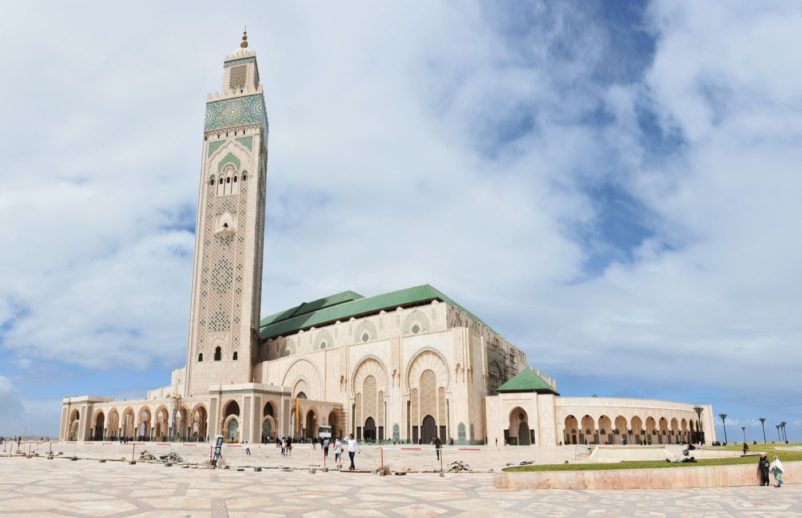
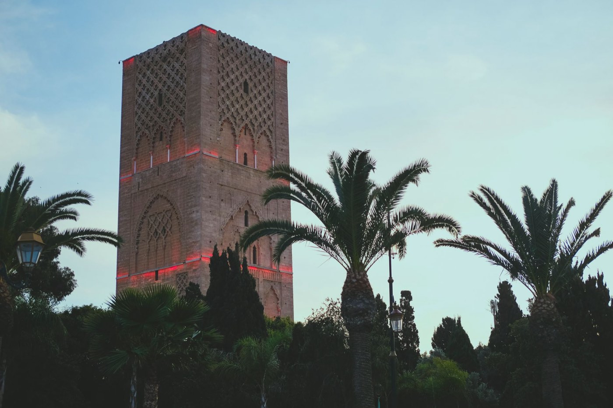
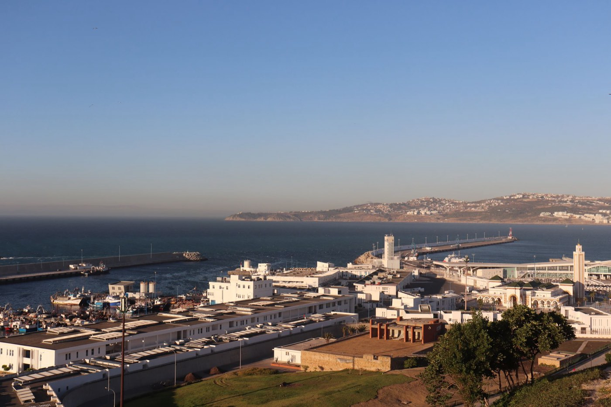
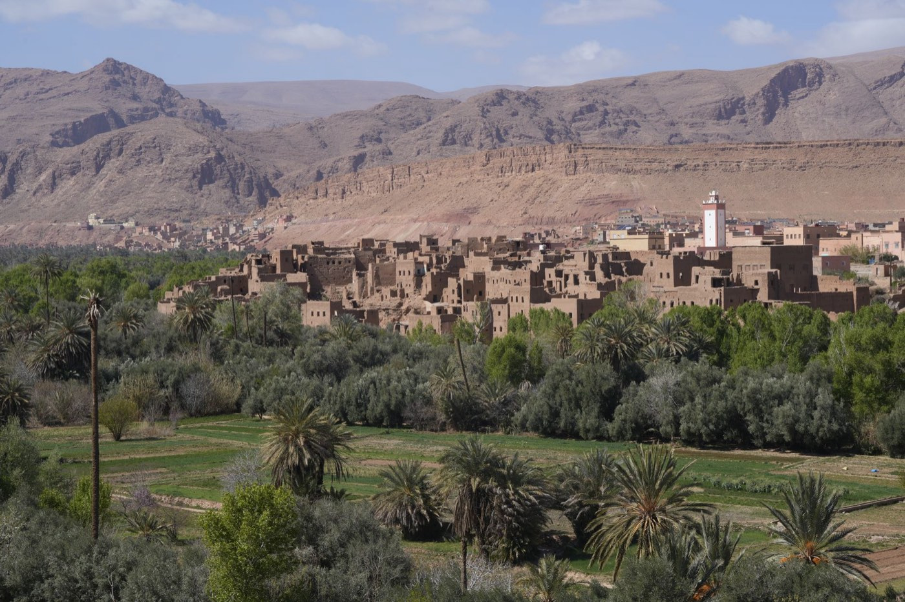

Destinations
Les lieux de nos voyages
Du détroit de Gibraltar aux dunes de Merzouga, dix lieux que nous connaissons et où passent nos voyages. Cliquez sur une destination pour voir ce qu'on y fait et quels voyages y mènent.
Carte indicative. Les voyages relient plusieurs de ces lieux.

MarrakechLa ville ocre

FèsGardienne de l'histoire marocaine

CasablancaLa modernité rencontre le charme de l'ancien

RabatUne capitale moderne avec une histoire profonde

Meknès et VolubilisUn musée à ciel ouvert

ChefchaouenLe rêve bleu

TangerEntre Atlantique et Méditerranée

Merzouga et le SaharaLa légende

Ouarzazate, Aït Ben Haddou et la vallée du DrâaKasbahs et palmeraies

La palmeraie de SkouraAu pied de l'Atlas